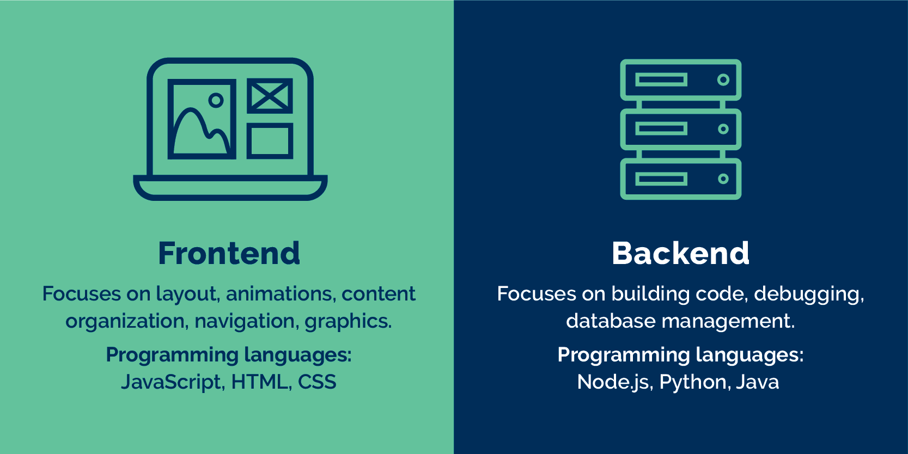

Application
Application
- application is a set of Programs
- Program is a set of instrect
- To write instrections we have four types of Language
- Programing Language
- Markeuo Language
- Screpting language
- Quary Language
- to Run the application in to client mishine(laptop,Mobail,Destope Etc)
user nead to install operating system like(windows,unix,mac Etc)
- We have four types of application in tha
- Standalone Application
- Web application
- Mubail application
- Disturbuted Application
Application

1.Stand Alone Application
- The Application Which are Working Without internet connectivaty isRrefurd as "Stand alone application"
- This Application not Depents on Anyother application hence, it is also called as independent application
- TO develop Stand alone application Make use of "Core Java"
- Every Stand Alone Application required instilazation in client Mechine(laptop,pc)
- To Run About Type of application the user nead to install Folling (os)(Windos,linex,Unix,mac) ex-word,Exl,PPT,Calculater etc

2.Web Application
- It is an application Which is Working With the healp of internet and Browser is referse as "WEB Application"
- TO Develop this Type Of Application Program are used
1.Web Techonalogy
2.Advance Java
ex:- flipkart,w3school,Javatpoint
- Wed Application dus not Requir Instalization in client machine

Browser:
- It is an application Which nead to install in a client machine as well as internet connection Hence it is repeted as Standalone application
- Browser is a spical type of application which neads inter nets to perform fallowing task
1.To Access web Application(or)web pages
2.To Navigat form one application to another application
- Exam:Google chrome,firefox Etc

Server
- Server is a machine which acts like made for between,programmer and user
- programmer are using Server to store web application as well as user data
- User can Access web Application by sending the request by the Server will provied to response to the user
- Server and client machine Both are present as different location Hence web applications required internet

Type of Components
- Every web application have two importent Components
1.Front end
2.Back end
1.Front End& Back end
- The components wich are visible to the user are reported as front end of the web page
- To Develop Frontend of the application program are using "web Techonalogy"
- For Example:image,video etc
- The component wich are hidden from the user is reford as back end of application
- To Develop his componets make use of Corejava&SQL
- ForExample:Data Base,Registation,OTP etc

Types of web application
- We have two types of web Application
1.Static webapplication
2.Dynamic web Application
- The application Wich containe only frent end components is refered as "Static web application"
- To develop this application programmer using "Web Techonalogy"
- example:Blog,wikipedia
- The application wich containe frentend as well as back end is refered as "Dynamic web Application"
- To develop this Application programmer using"Advance java(web Techonalogy,Corejava,SQL)"
- example:inst,facebooketc

3.Mobail Application
- The Application wich neads to install and downloade in mobail is refered as "Mobail Application"
- To develop this Application makese of "Flutter Techonalogy"
- Ex:Inst,Whatapp,Gpay,Snapchart Etc
- To Run This Application in a client machine we must required"Androide,Ios"OS

4.Disturbuted Application
- The Application Which are Interconnect is refered as "Disterbuted Application"
- To Develop this Application Make use of "Cloude Techonalogy"
- Ex: insta,zomoto,gpay etc

Thank You